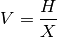

survey – Surveyor’s Calculator¶
Introduction
SURVEYOR'S CALCULATOR by George Murphy VE3ERP
Ref. Thomas L. Glover, Pocket Ref, 2nd edition, Sequoia Publishing, pp.373-382
Analysis¶
There are three Solver classes here.
- Slope/Gradient/Grade Calculator
- Stadia Calculator
- Apparent Dip Calculator
The Slope/Gradient/Grade Calculator is a Solver that works in Horizontal distance, H, Vertical rise, V, Slope in degrees, D, Grade in %, G, or Gradient as a ratio, X.
Compute D, given V and H, .
Compute V, given D and H, .
Compute H, given D and V, .
Compute G, given D, .
Compute D, given G, .
Compute X, given V and H, .
Compute H, given X and V, .
Compute V, given H and X, .
The Stadia Calculator is a Solver that works in Slope angle (degrees), A, Slope distance, S, Vertical distance, V, and Horizontal distance, H.
Compute V and H, given R and S,
Compute S and H, given R and V,
Compute S and V, given R and H,
Compute R and H, given S and V,
Compute R and V, given S and H,
Compute R and S, given V and H,
The Apparent Dip Calculator is a Solver that works in Apparent Dip, D_A, True dip, D_T and “Angle between”, A, which refers to angle between Strike and direction of Cross Section.
Compute A, given D_A and D_T, .
Compute D_T, given D_A and A, .
Compute D_A, given D_T and A, .
Legacy Quirks¶
Here’s one definition of arcsine. This has a slightly less quirky API X=V/S:AB=FNASN.
1510 DEF FNASN=ATN(X/SQR(-X^2+1)) :REM'arcsine
Here’s another definition of arcsine. In the same program. This has a quirky API. X=V/S:GOSUB 1050:R=ASN.
1050 :REM'.....inverse sin and cos
1060 ASN=ATN(X/SQR(-X^2+1)) :REM'arcsin
1070 ACS=-ASN+PI/2 :REM'arcsin
1080 RETURN